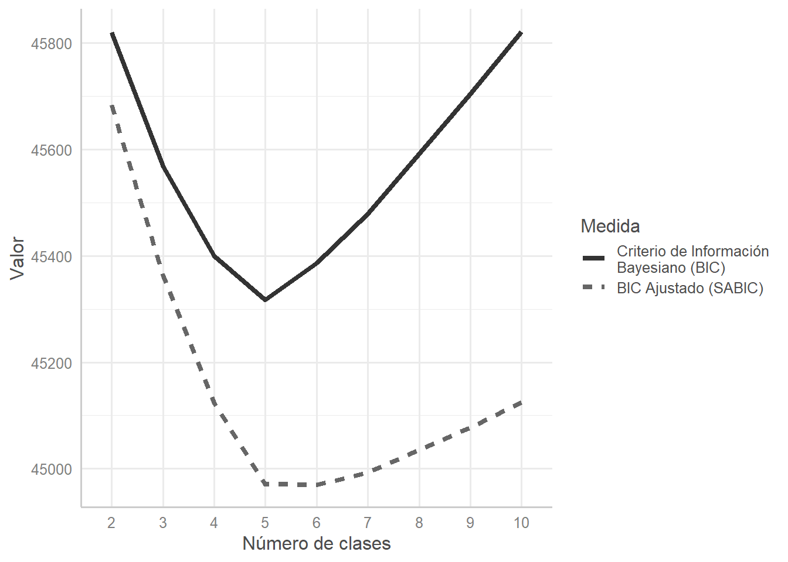
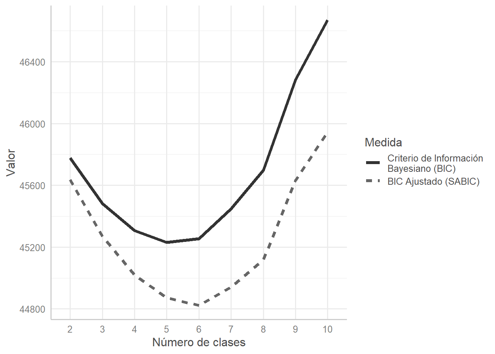
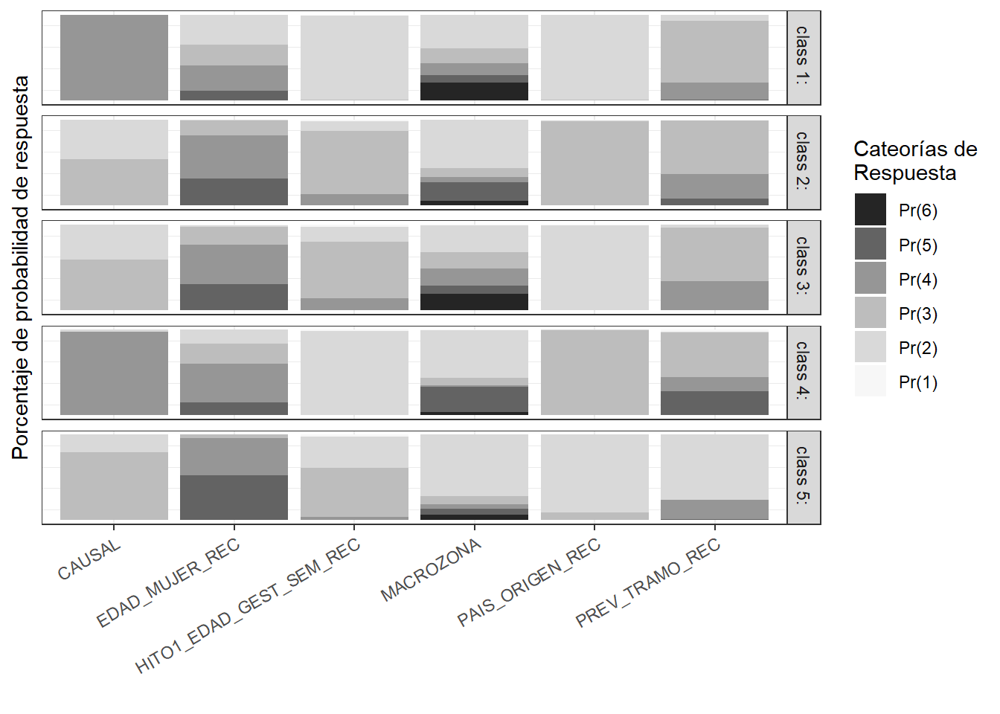
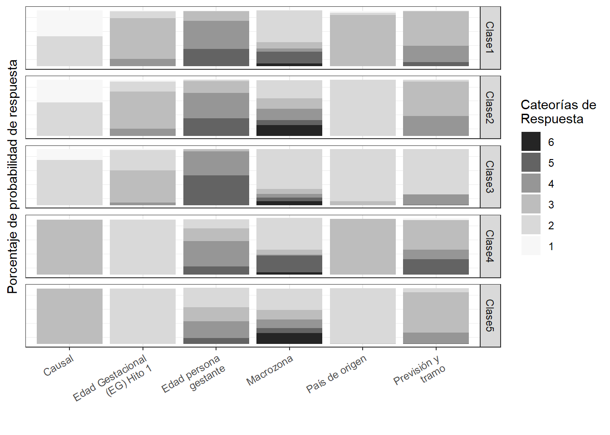
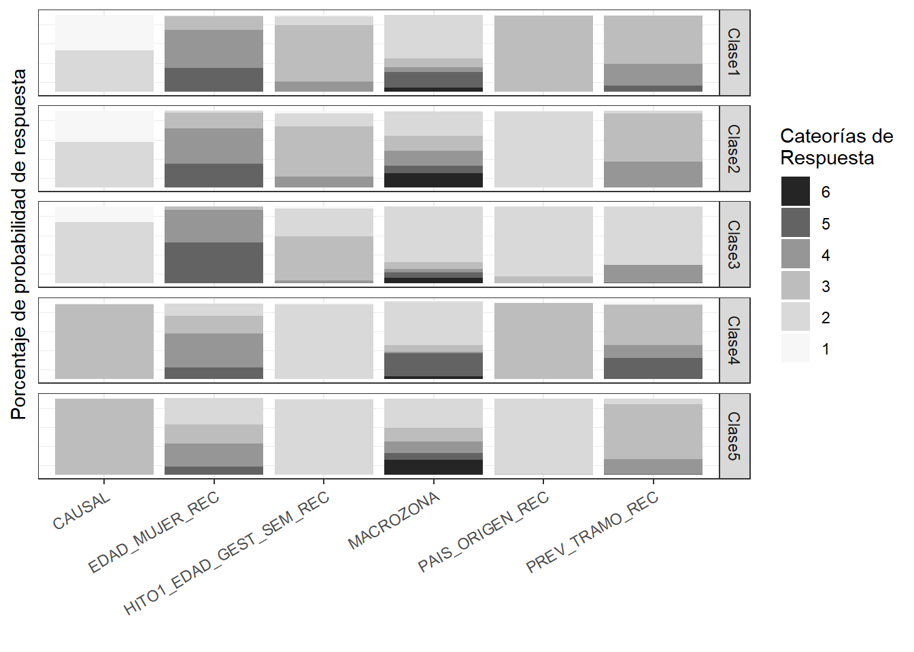

Paso 4
Resumen de datos para exportar a revista
Cargar paquetes
Cargar bases de datos
Análisis de clases latentes, modelos definitivos, sin pueblo originario y año
Code
rm(list = ls());gc() used (Mb) gc trigger (Mb) max used (Mb)
Ncells 2889967 154.4 4603382 245.9 4603382 245.9
Vcells 4788211 36.6 10146329 77.5 6795676 51.9Code
load("data2_lca3_sin_po_ano_2023_05_14.RData") #Paso 213 y 214
#variables_probabilities_in_category_sin_po_ano.xlsx
#variables_probabilities_in_category_glca_adj_sin_po.xlsxbootlrt
require(sjPlot)
require(tidyverse)
require(tableone)
manualcolors<- c(paste0("gray",seq(20,80, by=20)))
fig_lca_fit<- tab_ppio %>%
dplyr::mutate_if(is.character, as.numeric) %>% # convert character columns to numeric
tidyr::pivot_longer(cols = -ModelIndex, #"evryone but index"
names_to = "indices", values_to = "value", values_drop_na = F) %>%
dplyr::mutate(indices = factor(indices, levels = levels, labels = labels)) %>%
dplyr::filter(grepl("(BIC)",indices, ignore.case=T))%>%
dplyr::mutate(ModelIndex= factor(ModelIndex, levels=2:n_class_max)) %>%
ggplot(aes(x = ModelIndex, y = value, group = indices, color = indices, linetype = indices)) +
geom_line(size = 1.5) +
scale_color_manual(values = manualcolors) +
#scale_linetype_manual(values = c("solid", "dashed", "dotted")) +
labs(x = "Número de clases", y="Valor", color="Medida", linetype="Medida")+
#facet_wrap(.~indices, scales = "free_y", nrow = 4, ncol = 1) +
sjPlot::theme_sjplot()
fig_lca_fit
Code
ggsave("__fig2_medidas_de_ajuste_polca_sin_ano_pueb_orig.pdf",fig_lca_fit)Saving 7 x 5 in imageCode
manualcolors2<- c(paste0("gray",seq(20,80, by=20)))
fig_lca_fit2<- tab_ppio2 %>%
dplyr::mutate_if(is.character, as.numeric) %>% # convert character columns to numeric
tidyr::pivot_longer(cols = -ModelIndex, #"evryone but index"
names_to = "indices", values_to = "value", values_drop_na = F) %>%
dplyr::mutate(indices = factor(indices, levels = levels2, labels = labels2)) %>%
dplyr::filter(grepl("BIC",indices, ignore.case=T))%>%
dplyr::mutate(ModelIndex= factor(ModelIndex, levels=2:n_class_max)) %>%
ggplot(aes(x = ModelIndex, y = value, group = indices, color = indices, linetype = indices)) +
geom_line(size = 1.5) +
scale_color_manual(values = manualcolors2) +
#scale_linetype_manual(values = c("solid", "dashed", "dotted")) +
labs(x = "Número de clases", y="Valor", color="Medida",linetype="Medida")+
#facet_wrap(.~indices, scales = "free_y", nrow = 4, ncol = 1) +
sjPlot::theme_sjplot()
fig_lca_fit2
Code
ggsave("__fig3_medidas_de_ajuste_polca_sin_ano_pueb_orig_adj.pdf",fig_lca_fit2)Saving 7 x 5 in imageCode
table_homolog<-
cbind.data.frame(
Name = c("n", "CAUSAL", "CAUSAL", "CAUSAL", "EDAD_MUJER_REC",
"EDAD_MUJER_REC", "EDAD_MUJER_REC", "EDAD_MUJER_REC", "EDAD_MUJER_REC",
"PAIS_ORIGEN_REC", "PAIS_ORIGEN_REC", "PAIS_ORIGEN_REC", "HITO1_EDAD_GEST_SEM_REC",
"HITO1_EDAD_GEST_SEM_REC", "HITO1_EDAD_GEST_SEM_REC", "HITO1_EDAD_GEST_SEM_REC",
"MACROZONA", "MACROZONA", "MACROZONA", "MACROZONA", "MACROZONA",
"MACROZONA", "AÑO", "AÑO", "AÑO", "AÑO", "AÑO", "PREV_TRAMO_REC",
"PREV_TRAMO_REC", "PREV_TRAMO_REC", "PREV_TRAMO_REC", "PREV_TRAMO_REC",
"HITO2_DECISION_MUJER_IVE", "HITO2_DECISION_MUJER_IVE", "HITO2_DECISION_MUJER_IVE"),
level = c("", "2", "3", "4", "1", "2", "3", "4", "5", "1",
"2", "3", "1", "2", "3", "4", "1", "2", "3", "4", "5", "6", "2",
"3", "4", "5", "6", "1", "2", "3", "4", "5", "CONTINUAR EL EMBARAZO",
"INTERRUMPIR EL EMBARAZO", "NO APLICA, INSCONSCIENTE"),
cat = c("", "Causal 1", "Causal 2", "Causal 3", "[Perdidos]", "1. <18", "2. 18-24", "3. 25-35", "4. >=35",
"[Perdidos]", "Chile", "Otros", "[Perdidos]", "1. 0-13 semanas", "2. 14-27 semanas", "3. >=28 semanas",
"[Perdidos]", "Centro", "Centro Norte", "Centro Sur", "Norte", "Sur", "2018", "2019", "2020", "2021", "2022",
"[Perdidos]", "ISAPRE o FFAA", "FONASA A/B", "FONASA C/D", "NINGUNA", "CONTINUAR EL EMBARAZO", "INTERRUMPIR EL EMBARAZO", "NO APLICA, INSCONSCIENTE")
)
run_tableone(listVars =c("CAUSAL", "EDAD_MUJER_REC", "PAIS_ORIGEN_REC",
"HITO1_EDAD_GEST_SEM_REC","MACROZONA", "AÑO", "PREV_TRAMO_REC",
"HITO2_DECISION_MUJER_IVE"), df= mydata_preds3,
catVars= c("CAUSAL", "EDAD_MUJER_REC", "PAIS_ORIGEN_REC",
"HITO1_EDAD_GEST_SEM_REC","MACROZONA", "AÑO", "PREV_TRAMO_REC"),
strata= "outcome") %>%
dplyr::left_join(table_homolog, by= c("Name"="Name","level"="level")) %>%
dplyr::select(Name, cat, everything()) %>%
dplyr::select(-level) %>%
knitr::kable("markdown", caption="Descriptivos (acotado)")Warning: `add_rownames()` was deprecated in dplyr 1.0.0.
Please use `tibble::rownames_to_column()` instead.
This warning is displayed once every 8 hours.
Call `lifecycle::last_lifecycle_warnings()` to see where this warning was generated.| Name | cat | Overall | 0 | 1 | p | test |
|---|---|---|---|---|---|---|
| n | 3789 | 606 | 3183 | |||
| CAUSAL | Causal 1 | 1171 (30.9) | 203 (33.5) | 968 ( 30.4) | <0.001 | |
| CAUSAL | Causal 2 | 1887 (49.8) | 346 (57.1) | 1541 ( 48.4) | ||
| CAUSAL | Causal 3 | 731 (19.3) | 57 ( 9.4) | 674 ( 21.2) | ||
| EDAD_MUJER_REC | [Perdidos] | 18 ( 0.5) | 2 ( 0.3) | 16 ( 0.5) | 0.024 | |
| EDAD_MUJER_REC | 1. <18 | 269 ( 7.1) | 55 ( 9.1) | 214 ( 6.7) | ||
| EDAD_MUJER_REC | 2. 18-24 | 720 (19.0) | 102 (16.8) | 618 ( 19.4) | ||
| EDAD_MUJER_REC | 3. 25-35 | 1646 (43.4) | 243 (40.1) | 1403 ( 44.1) | ||
| EDAD_MUJER_REC | 4. >=35 | 1136 (30.0) | 204 (33.7) | 932 ( 29.3) | ||
| PAIS_ORIGEN_REC | [Perdidos] | 18 ( 0.5) | 5 ( 0.8) | 13 ( 0.4) | 0.005 | |
| PAIS_ORIGEN_REC | Chile | 3091 (81.6) | 518 (85.5) | 2573 ( 80.8) | ||
| PAIS_ORIGEN_REC | Otros | 680 (17.9) | 83 (13.7) | 597 ( 18.8) | ||
| HITO1_EDAD_GEST_SEM_REC | [Perdidos] | 87 ( 2.3) | 12 ( 2.0) | 75 ( 2.4) | <0.001 | |
| HITO1_EDAD_GEST_SEM_REC | 1. 0-13 semanas | 1328 (35.0) | 128 (21.1) | 1200 ( 37.7) | ||
| HITO1_EDAD_GEST_SEM_REC | 2. 14-27 semanas | 2008 (53.0) | 343 (56.6) | 1665 ( 52.3) | ||
| HITO1_EDAD_GEST_SEM_REC | 3. >=28 semanas | 366 ( 9.7) | 123 (20.3) | 243 ( 7.6) | ||
| MACROZONA | [Perdidos] | 11 ( 0.3) | 3 ( 0.5) | 8 ( 0.3) | <0.001 | |
| MACROZONA | Centro | 1608 (42.4) | 198 (32.7) | 1410 ( 44.3) | ||
| MACROZONA | Centro Norte | 610 (16.1) | 74 (12.2) | 536 ( 16.8) | ||
| MACROZONA | Centro Sur | 555 (14.6) | 154 (25.4) | 401 ( 12.6) | ||
| MACROZONA | Norte | 431 (11.4) | 70 (11.6) | 361 ( 11.3) | ||
| MACROZONA | Sur | 574 (15.1) | 107 (17.7) | 467 ( 14.7) | ||
| AÑO | 2018 | 732 (19.3) | 115 (19.0) | 617 ( 19.4) | 0.306 | |
| AÑO | 2019 | 818 (21.6) | 149 (24.6) | 669 ( 21.0) | ||
| AÑO | 2020 | 662 (17.5) | 103 (17.0) | 559 ( 17.6) | ||
| AÑO | 2021 | 820 (21.6) | 131 (21.6) | 689 ( 21.6) | ||
| AÑO | 2022 | 757 (20.0) | 108 (17.8) | 649 ( 20.4) | ||
| PREV_TRAMO_REC | [Perdidos] | 14 ( 0.4) | 4 ( 0.7) | 10 ( 0.3) | <0.001 | |
| PREV_TRAMO_REC | ISAPRE o FFAA | 488 (12.9) | 37 ( 6.1) | 451 ( 14.2) | ||
| PREV_TRAMO_REC | FONASA A/B | 2096 (55.3) | 382 (63.0) | 1714 ( 53.8) | ||
| PREV_TRAMO_REC | FONASA C/D | 1092 (28.8) | 179 (29.5) | 913 ( 28.7) | ||
| PREV_TRAMO_REC | NINGUNA | 99 ( 2.6) | 4 ( 0.7) | 95 ( 3.0) | ||
| HITO2_DECISION_MUJER_IVE | CONTINUAR EL EMBARAZO | 593 (15.7) | 593 (97.9) | 0 ( 0.0) | <0.001 | |
| HITO2_DECISION_MUJER_IVE | INTERRUMPIR EL EMBARAZO | 3183 (84.0) | 0 ( 0.0) | 3183 (100.0) | ||
| HITO2_DECISION_MUJER_IVE | NO APLICA, INSCONSCIENTE | 13 ( 0.3) | 13 ( 2.1) | 0 ( 0.0) |
Code
#knitr::kable("html", caption="Descriptivos (acotado)") %>% kableExtra::kable_classic()
no_mostrar=1
#_#_#_#_#_#_#_#_#_#_#_#_#_#_#_#_#_#_#_#_#_#_#_#_#_#_#_#_#_#_#_#_#_#_#_#_#_#_#_#_#_#_#_
#_#_#_#_#_#_#_#_#_#_#_#_#_#_#_#_#_#_#_#_#_#_#_#_#_#_#_#_#_#_#_#_#_#_#_#_#_#_#_#_#_#_#_
#_#_#_#_#_#_#_#_#_#_#_#_#_#_#_#_#_#_#_#_#_#_#_#_#_#_#_#_#_#_#_#_#_#_#_#_#_#_#_#_#_#_#_
#if(no_mostrar==0){
# dplyr::select(HITO2_DECISION_MUJER_IVE, c("CAUSAL", "EDAD_MUJER_REC", "PAIS_ORIGEN_REC", "HITO1_EDAD_GEST_SEM_REC","MACROZONA", "AÑO", "PREV_TRAMO_REC")) %>%
chisquare_test<-
mydata_preds3%>%
dplyr::select(
c("CAUSAL", "EDAD_MUJER_REC", "PAIS_ORIGEN_REC",
"HITO1_EDAD_GEST_SEM_REC","MACROZONA", "PREV_TRAMO_REC", "outcome")) %>%
tidyr::gather(variable,measure, -outcome) %>%
dplyr::group_by(variable) %>%
dplyr::do(cbind.data.frame(broom::tidy(chisq.test(.$outcome, .$measure)),
broom::tidy(sum(table(.$outcome, .$measure))))) %>%
#casos completos
#chisq.test(table(Base_fiscalia_v14_filt$motivodeegreso_mod_imp_rec, Base_fiscalia_v14_filt$sus_principal_mod, exclude=NULL))
dplyr::mutate(p.value=ifelse(p.value<.001,"<0.001",sprintf("%1.3f",p.value))) %>%
dplyr::mutate(statistic=sprintf("%2.0f",statistic)) %>%
dplyr::mutate(report=paste0("X²(",parameter,", ",x,")=",statistic,"; p", ifelse(p.value=="<0.001",p.value, paste0("=",p.value)))) %>%
dplyr::mutate(report=sub("0\\.","0,",sub("\\.",",",report)))Warning: 'tidy.numeric' is deprecated.
See help("Deprecated")Warning in chisq.test(.$outcome, .$measure): Chi-squared approximation may be
incorrectWarning: 'tidy.numeric' is deprecated.
See help("Deprecated")
Warning: 'tidy.numeric' is deprecated.
See help("Deprecated")Warning in chisq.test(.$outcome, .$measure): Chi-squared approximation may be
incorrectWarning: 'tidy.numeric' is deprecated.
See help("Deprecated")Warning in chisq.test(.$outcome, .$measure): Chi-squared approximation may be
incorrectWarning: 'tidy.numeric' is deprecated.
See help("Deprecated")Warning in chisq.test(.$outcome, .$measure): Chi-squared approximation may be
incorrectWarning: 'tidy.numeric' is deprecated.
See help("Deprecated")Code
# chisq.test(Base_fiscalia_v14_filt$motivodeegreso_mod_imp_rec, is.na(Base_fiscalia_v14_filt$offender_d))
# chisq.test(Base_fiscalia_v14_filt$motivodeegreso_mod_imp_rec, is.na(Base_fiscalia_v14_filt$offender_d))
#
fisher_test<-
mydata_preds3 %>%
dplyr::select(
c("CAUSAL", "EDAD_MUJER_REC", "PREV_TRAMO_REC", "MACROZONA", "outcome"))%>%
tidyr::gather(variable,measure, -outcome) %>%
dplyr::group_by(variable) %>%
dplyr::do(fisher.test(table(.$outcome, .$measure, exclude=NULL),
workspace = 2e10, simulate.p.value = T, B=1e5) %>%
broom::tidy())
#EDAD_MUJER HITO1_EDAD_GESTACIONAL_SEMANAS
med_iqr <-
rbind.data.frame(medicion=
paste0(
"Edad mujer: ",
quantile(data2$EDAD_MUJER,.5, na.rm=T), "[",
quantile(data2$EDAD_MUJER,.25, na.rm=T),", ",
quantile(data2$EDAD_MUJER,.75, na.rm=T),"]"
), medicion=
paste0(
"Edad mujer (IVE): ",
quantile(data2$EDAD_MUJER[mydata_preds3$outcome==1],.5, na.rm=T), "[",
quantile(data2$EDAD_MUJER[mydata_preds3$outcome==1],.25, na.rm=T),", ",
quantile(data2$EDAD_MUJER[mydata_preds3$outcome==1],.75, na.rm=T),"]"
),
medicion=paste0(
"Edad mujer (no IVE): ",
quantile(data2$EDAD_MUJER[mydata_preds3$outcome==0],.5, na.rm=T), "[",
quantile(data2$EDAD_MUJER[mydata_preds3$outcome==0],.25, na.rm=T),", ",
quantile(data2$EDAD_MUJER[mydata_preds3$outcome==0],.75, na.rm=T),"]"
),
medicion=paste0(
"Edad gestacional en semanas: ",
quantile(data2$HITO1_EDAD_GESTACIONAL_SEMANAS,.5, na.rm=T), "[", quantile(data2$HITO1_EDAD_GESTACIONAL_SEMANAS,.25, na.rm=T),", ", quantile(data2$HITO1_EDAD_GESTACIONAL_SEMANAS,.75, na.rm=T),"]"),
medicion=paste0(
"Edad gestacional en semanas (IVE): ",
quantile(data2$HITO1_EDAD_GESTACIONAL_SEMANAS[mydata_preds3$outcome==1],.5, na.rm=T), "[", quantile(data2$HITO1_EDAD_GESTACIONAL_SEMANAS[mydata_preds3$outcome==1],.25, na.rm=T),", ", quantile(data2$HITO1_EDAD_GESTACIONAL_SEMANAS[mydata_preds3$outcome==1],.75, na.rm=T),"]"),
medicion=paste0(
"Edad gestacional en semanas (no IVE): ",
quantile(data2$HITO1_EDAD_GESTACIONAL_SEMANAS[mydata_preds3$outcome==0],.5, na.rm=T), "[", quantile(data2$HITO1_EDAD_GESTACIONAL_SEMANAS[mydata_preds3$outcome==0],.25, na.rm=T),", ", quantile(data2$HITO1_EDAD_GESTACIONAL_SEMANAS[mydata_preds3$outcome==0],.75, na.rm=T),"]" )
)
colnames(med_iqr)<-"medicion"
# Kurksal Wallis
kruskal<-
rbind.data.frame(
name=paste0("Edad mujer (continua): H(",kruskal.test(data2$EDAD_MUJER ~ mydata_preds3$outcome)$parameter,")=",
round(kruskal.test(data2$EDAD_MUJER ~ mydata_preds3$outcome)$statistic,1), ", p=",
round(kruskal.test(data2$EDAD_MUJER ~ mydata_preds3$outcome)$p.value,3)),
name=paste0("Edad gestacional (continua): H(",kruskal.test(data2$HITO1_EDAD_GESTACIONAL_SEMANAS ~ mydata_preds3$outcome)$parameter,")=",
round(kruskal.test(data2$HITO1_EDAD_GESTACIONAL_SEMANAS ~ mydata_preds3$outcome)$statistic,1), ", p=",
round(kruskal.test(data2$HITO1_EDAD_GESTACIONAL_SEMANAS ~ mydata_preds3$outcome)$p.value,3))
)
colnames(kruskal)<-"names"
#_#_#_#_#_#_#_#_#_#_#_#_#_#_#_#_#_#_#_#_#_#_#_#_#_#_#_#_#_#_
#_#_#_#_#_#_#_#_#_#_#_#_#_#_#_#_#_#_#_#_#_#_#_#_#_#_#_#_#_#_
rio::export(list(chisquare_test = chisquare_test,
fisher_test = fisher_test,
kruskal= kruskal,
iqr= med_iqr), "tableone_extension.xlsx")
#}Figuras (poLCA)
Code
#https://agscl.github.io/IVE/Paso35.html
require(plotly)
#https://github.com/slowkow/ggrepel
lcmodel_wo_na<-
lcmodel %>%
dplyr::filter(!is.na(CATEGORIA)) %>%
dplyr::mutate(Var1=str_replace(Var1,"class","Clase"),
L2= dplyr::case_when(L2=="CAUSAL"~ "Causal",
L2=="EDAD_MUJER_REC"~ "Edad mujer",
L2=="MACROZONA"~ "Macrozona",
L2=="HITO1_EDAD_GEST_SEM_REC"~ "Edad Gestacional\n(EG) Hito 1",
L2=="PREV_TRAMO_REC"~ "Previsión y\ntramo",
L2=="PAIS_ORIGEN_REC"~ "País de origen")) %>%
dplyr::mutate(CATEGORIA= gsub("1.0-13 semanas","1. <=13 semanas",CATEGORIA)) %>%
dplyr::mutate(CATEGORIA= gsub("CENTRO","Centro",CATEGORIA)) %>%
dplyr::mutate(CATEGORIA= gsub("CENTRO NORTE","Centro norte",CATEGORIA)) %>%
dplyr::mutate(CATEGORIA= gsub("CENTRO SUR","Centro sur",CATEGORIA)) %>%
dplyr::mutate(CATEGORIA= gsub("NORTE","Norte",CATEGORIA)) %>%
dplyr::mutate(CATEGORIA= gsub("SUR","Sur",CATEGORIA)) %>%
dplyr::mutate(CATEGORIA= gsub("25-35","25-34",CATEGORIA)) %>%
#
dplyr::mutate(CATEGORIA= gsub("25-35","25-34",CATEGORIA)) %>%
dplyr::mutate(CATEGORIA= gsub("25-35","25-34",CATEGORIA)) %>%
dplyr::mutate(CATEGORIA= gsub("25-35","25-34",CATEGORIA)) %>%
dplyr::mutate(CATEGORIA= gsub("25-35","25-34",CATEGORIA)) %>%
dplyr::mutate(lab2=glue::glue("{stringr::str_replace(CATEGORIA,' ','\n')}\n({scales::percent(value)})"))
zp1b <- ggplot(data= lcmodel_wo_na, aes(x = L2, y = value, fill = Var2, label=lab2))
zp1b <- zp1b + geom_bar(stat = "identity", position = "stack")
#zp1b <- zp1b + geom_text(position = position_stack(vjust = 0.5), size=3) # add labels
zp1b <- zp1b + facet_grid(Var1 ~ .)
zp1b <- zp1b + scale_fill_manual(values=paste0("grey",seq(20,80, by=60/6))) +theme_bw()
zp1b <- zp1b + labs(y = "Porcentaje de probabilidad de respuesta",
x = "",
fill ="Cateorías de\nRespuesta")
zp1b <- zp1b + theme( axis.text.y=element_blank(),
axis.ticks.y=element_blank(),
panel.grid.major.y=element_blank())
zp1b <- zp1b + guides(fill = guide_legend(reverse=TRUE))
zp1b <- zp1b + theme(axis.text.x = element_text(angle = 30, hjust = 1))
ggsave("zp1.png", zp1b+ggrepel::geom_label_repel(data= dplyr::filter(lcmodel_wo_na,!CATEGORIA=="Perdidos"),#aes(#y=half, label=lab),
#position = position_dodge(width = .5), # move to center of bars
#vjust = 0, # nudge above top of bar
#position = position_stack(vjust = 0.5),
#position = position_dodge(width = .8),
#vjust = .1,
position = position_stack(vjust = 0.5),
size = 3,
max.iter = 1e6,
#direction = "y",
#force=1,
#seed=123,
colour = "white", fontface = "bold")+theme(legend.position= "none"), height=13)#, fill = "white" --> dentro de label repelSaving 7 x 13 in imageCode
ggplotly(zp1, tooltip = c("text_label"))%>% layout(xaxis= list(showticklabels = T),height=600, width=800) Warning: Specifying width/height in layout() is now deprecated.
Please specify in ggplotly() or plot_ly()Distribución de categorías del modelo
Code
# ggplotly(zp2, tooltip = c("text_label"))%>% layout(xaxis= list(showticklabels = T),height=600, width=800)
zp2
Code
ggplotly(zp2, tooltip= c("text_label"))%>% layout(xaxis= list(showticklabel=T), height=600, width=800)Warning: Specifying width/height in layout() is now deprecated.
Please specify in ggplotly() or plot_ly()Code
zp1_tab<-
lcmodel %>%
dplyr::select(Var1, L2, CATEGORIA, pr, value) %>%
tidyr::pivot_wider(id_cols =c(L2,pr,CATEGORIA), names_from = Var1, values_from=value) %>%
dplyr::mutate(across(contains("class"),~ sprintf("%01.1f",.*100)))
zp2_tab<-
lcmodel_adj %>%
dplyr::select(Var1, L2, CATEGORIA, pr, value) %>%
tidyr::pivot_wider(id_cols =c(L2,pr,CATEGORIA), names_from = Var1, values_from=value) %>%
dplyr::mutate(across(contains("class"),~ sprintf("%01.1f",.*100)))
#_#_#_#_#_#_#_#_#_#_#_#_#_#_#_#_#_#_#_#_#_#_#_#_#_#_#_#_#_#_
#_#_#_#_#_#_#_#_#_#_#_#_#_#_#_#_#_#_#_#_#_#_#_#_#_#_#_#_#_#_
rio::export(list(zp1 = zp1_tab,
zp2_zp1_adj = zp2_tab), "tab_mod_dist_cat.xlsx")Regresión logística (poLCA)
Antes, ver relación con resultado de aquellos clasificados en una clase.
Code
cbind.data.frame(mydata_preds3,LCA_best_model_mod$predclass) %>%
janitor::tabyl(outcome, `LCA_best_model_mod$predclass`)%>%
janitor::adorn_percentages("col") %>%
dplyr::mutate_if(is.numeric, ~scales::percent(., accuracy=0.1)) outcome 1 2 3 4 5
0 6.2% 7.4% 15.1% 20.9% 8.2%
1 93.8% 92.6% 84.9% 79.1% 91.8%Con resultado distal
Code
df_model_LCA2 %>% select(starts_with("prob_c")) %>%
t() %>% data.table::data.table(keep.rownames=T) %>%
dplyr::mutate(rn=gsub("prob_c","",rn)) %>%
knitr::kable("markdown", caption="Probabilidad de pertenecer a una clase, según interrupción del embarazo", col.names = c("Clase","No interrumpe", "Interrumpe"))| Clase | No interrumpe | Interrumpe |
|---|---|---|
| 1 | 0.19(95%CI=0.16,0.23) | 0.18(95%CI=0.17,0.19) |
| 2 | 0.18(95%CI=0.15,0.21) | 0.15(95%CI=0.14,0.17) |
| 3 | 0.3(95%CI=0.26,0.33) | 0.39(95%CI=0.37,0.4) |
| 4 | 0.16(95%CI=0.13,0.19) | 0.13(95%CI=0.12,0.14) |
| 5 | 0.17(95%CI=0.15,0.21) | 0.15(95%CI=0.14,0.17) |
Análisis de clases latentes, selección de clases, modelo alternativo, sin pueblo originario y año Búsqueda de clases, Análisis secundario
Medidas de ajuste poLCA y glca, combinados
Code
load("data2_lca3_glca_sin_po_ano.RData")Code
#rm(list = ls());gc()
tab_ppio %>%#
dplyr::select(ModelIndex, everything()) %>%
dplyr::mutate_if(is.character, as.numeric) %>%
cbind.data.frame(dplyr::select(data.frame(bootlrt$gtable), BIC, entropy, Gsq, Boot.p.value)) %>%
janitor::clean_names() %>%
dplyr::mutate_if(is.numeric, ~round(.,2)) %>%
dplyr::select(model_index, bic, a_bic, bic, bic_2, rel_ent, ent_r2, entropy, gsq_2, boot_p_value) -> tab_fit1
tab_fit1 %>%
# convert character columns to numeric
knitr::kable(format="markdown", caption="Medidas de ajuste (dividir por 1000 gsq_2)")| model_index | bic | a_bic | bic_2 | rel_ent | ent_r2 | entropy | gsq_2 | boot_p_value |
|---|---|---|---|---|---|---|---|---|
| 2 | 45819.78 | 45683.15 | 45803.30 | 0.99 | 0.98 | 0.99 | 2678.89 | 0 |
| 3 | 45568.50 | 45361.96 | 45543.78 | 0.91 | 0.89 | 0.91 | 2246.33 | 0 |
| 4 | 45399.87 | 45123.42 | 45366.91 | 0.90 | 0.89 | 0.90 | 1896.42 | 0 |
| 5 | 45317.18 | 44970.83 | 45275.98 | 0.91 | 0.89 | 0.91 | 1632.46 | 0 |
| 6 | 45386.28 | 44970.02 | 45336.84 | 0.83 | 0.80 | 0.83 | 1520.28 | 0 |
| 7 | 45478.47 | 44992.30 | 45420.79 | 0.78 | 0.76 | 0.78 | 1431.19 | 0 |
| 8 | 45591.83 | 45035.76 | 45525.91 | 0.79 | 0.76 | 0.79 | 1363.28 | 0 |
| 9 | 45703.82 | 45077.85 | 45629.66 | 0.76 | 0.73 | 0.76 | 1293.99 | 0 |
| 10 | 45820.84 | 45124.96 | 45738.44 | 0.76 | 0.72 | 0.76 | 1229.74 | 0 |
Code
tab_ppio2 %>%#
dplyr::select(ModelIndex, everything()) %>%
dplyr::mutate_if(is.character, as.numeric) %>%
cbind.data.frame(dplyr::select(data.frame(bootlrt2$gtable), BIC, entropy, Gsq, Boot.p.value)) %>%
janitor::clean_names() %>%
dplyr::mutate_if(is.numeric, ~round(.,2)) %>%
dplyr::select(model_index, bic, a_bic, bic, bic_2, rel_ent, ent_r2, entropy, gsq_2, boot_p_value) -> tab_fit2
tab_fit2 %>%
# convert character columns to numeric
knitr::kable(format="markdown", caption="Medidas de ajuste (ajustado)")| model_index | bic | a_bic | bic_2 | rel_ent | ent_r2 | entropy | gsq_2 | boot_p_value |
|---|---|---|---|---|---|---|---|---|
| 2 | 45776.24 | 45636.43 | 45759.76 | 0.99 | 0.99 | 0.99 | 3536.09 | 0 |
| 3 | 45481.98 | 45269.09 | 45457.26 | 0.89 | 0.86 | 0.89 | 3052.32 | 0 |
| 4 | 45305.93 | 45019.95 | 45272.97 | 0.91 | 0.89 | 0.91 | 2686.74 | 0 |
| 5 | 45230.37 | 44871.31 | 45189.17 | 0.92 | 0.90 | 0.92 | 2421.67 | 0 |
| 6 | 45255.46 | 44823.32 | 45195.29 | 0.86 | 0.83 | 0.86 | 2246.52 | 0 |
| 7 | 45447.71 | 44942.48 | 45259.35 | 0.88 | 0.84 | 0.85 | 2129.29 | 0 |
| 8 | 45697.24 | 45118.93 | 45333.74 | 0.83 | 0.78 | 0.78 | 2022.41 | 0 |
| 9 | 46281.80 | 45630.41 | 45416.50 | 0.85 | 0.75 | 0.76 | 1923.89 | 0 |
| 10 | 46669.37 | 45944.89 | 45534.20 | 0.95 | 0.91 | 0.74 | 1860.32 | 0 |
Code
rio::export(list(sin_ajustar = tab_fit1,
ajustado = tab_fit2), "polca_glca_fit_table.xlsx")
#Masyn is talking about normalized entropy above, which ranges from 0 to 1.
# Masyn, K. (2013). Chapter 25 Latent Class Analysis and Finite Mixture Modeling. The Oxford Handbook of Quantitative Methods. D. Little (eds). https://www.statmodel.com/download/Masyn_2013.pdf
#Vermunt, J. K., & Magidson, J. (2016). Technical guide for Latent GOLD 5.1: Basic, advanced, and syntax. Belmont, MA: Statistical Innovations Inc.
#https://www.google.com/url?q=https://www.statisticalinnovations.com/wp-content/uploads/LGtechnical.pdf&sa=D&source=docs&ust=1689531259723207&usg=AOvVaw2N3g_gco8-GUiiPhRQxRoSFiguras
Code
##https://agscl.github.io/IVE/Paso36.html
require(plotly)
# ggplotly(zp3, tooltip = c("text_label"))%>% layout(xaxis= list(showticklabels = T),height=600, width=800)
zp3
Code
ggplotly(zp3, tooltip = c("text_label"))%>% layout(xaxis= list(showticklabels = T),height=600, width=800)Warning: Specifying width/height in layout() is now deprecated.
Please specify in ggplotly() or plot_ly()Code
# ggplotly(zp4, tooltip = c("text_label"))%>% layout(xaxis= list(showticklabels = T),height=600, width=800)
zp4
Code
ggplotly(zp4, tooltip = c("text_label"))%>% layout(xaxis= list(showticklabels = T),height=600, width=800)Warning: Specifying width/height in layout() is now deprecated.
Please specify in ggplotly() or plot_ly()Regresión logística (no distal)
Code
#
# average_posterior_probability <- mean(poLCA.posterior(LCA_best_model_mod, LCA_best_model_mod$predclass))
#
# table(LCA_best_model_mod$predclass)
# table(posterior_glca_05_final$final_05)
# table(posterior_glca_05_final$final_05,car::recode(posterior_glca_05_final$final_05,"4=1;3=2;3=3;2=4;5=5;NA=NA"))
#
#
# posterior_glca_07_final %>%
# rowwise() %>%
# mutate(count_ones = sum(c_across(starts_with("Class")) == 1)) %>%
# ungroup() %>%
# janitor::tabyl(final_07,count_ones)
mat<-
cbind.data.frame(LCA_best_model_mod$posterior, y=LCA_best_model_mod$predclass) %>%
dplyr::group_by(y) %>%
dplyr::summarise(`1`= mean(`1`), `2`= mean(`2`), `3`= mean(`3`), `4`= mean(`4`), `5`= mean(`5`)) %>%
dplyr::mutate_all(~round(.,2))
paste("mean posterior probabilities: ",
paste(diag(matrix(unlist(mat), nrow=5)[,2:6]),collapse =", "))[1] "mean posterior probabilities: 0.98, 0.88, 0.98, 0.95, 1"Code
#_#_#_#_#_#_#_#_#_#_#_
#Classifying by posterior probs.
posterior_glca_05_final<-
best_model_glca$posterior$ALL %>%
dplyr::mutate_all(~ifelse(.>.5,1,0)) %>%
dplyr::mutate(final_05=dplyr::case_when(`Class 1`==1~1,`Class 2`==1~2, `Class 3`==1~3,`Class 4`==1~4, `Class 5`==1~5))
posterior_polca_05_final<-
LCA_best_model_mod$posterior %>%
data.frame() %>%
dplyr::mutate_all(~ifelse(.>.5,1,0)) %>%
dplyr::mutate(final_05=dplyr::case_when(`X1`==1~1,`X2`==1~2, `X3`==1~3,`X4`==1~4, `X5`==1~5))
posterior_glca_07_final<-
best_model_glca$posterior$ALL %>%
dplyr::mutate_all(~ifelse(.>.7,1,0)) %>%
dplyr::mutate(final_07=dplyr::case_when(`Class 1`==1~1,`Class 2`==1~2, `Class 3`==1~3,`Class 4`==1~4, `Class 5`==1~5))
posterior_polca_07_final<-
LCA_best_model_mod$posterior %>%
data.frame() %>%
dplyr::mutate_all(~ifelse(.>.7,1,0)) %>%
dplyr::mutate(final_07=dplyr::case_when(`X1`==1~1,`X2`==1~2, `X3`==1~3,`X4`==1~4, `X5`==1~5))
#_#_#_#_#_#_#_#_#_#_#_#_#_#_#_#_#_#_#_#_#_#_#_#_#_#_#_#_#_#_#_#_
#_#_#_#_#_#_#_#_#_#_#_#_#_#_#_#_#_#_#_#_#_#_#_#_#_#_#_#_#_#_#_#_
#_#_#_#_#_#_#_#_#_#_#_#_#_#_#_#_#_#_#_#_#_#_#_#_#_#_#_#_#_#_#_#_
bd_mydata_preds3_posterior<-
cbind.data.frame(mydata_preds3,final_07=posterior_glca_07_final$final_07,final_05=posterior_glca_05_final$final_05)%>% dplyr::mutate(outcome=ifelse(outcome==1,1,0))%>%
dplyr::mutate(final_07= dplyr::case_when(final_07==1~3, final_07==3~1, final_07==2~4, final_07==4~2, final_07==4~1, final_07==1~4, T~final_07)) %>%
dplyr::mutate(final_05= dplyr::case_when(final_05==1~3, final_05==3~1, final_05==2~4, final_05==4~2, final_05==4~1, final_05==1~4, T~final_05))%>%
dplyr::mutate(final_07=car::recode(final_07,"2=1;1=2")) %>%
dplyr::mutate(final_05=car::recode(final_05,"2=1;1=2"))
#janitor::tabyl(final_07)
bd_mydata_preds3_posterior_polca<-
cbind.data.frame(mydata_preds3,final_07=posterior_polca_07_final$final_07,final_05=posterior_polca_05_final$final_05)%>% dplyr::mutate(outcome=ifelse(outcome==1,1,0)) %>%
dplyr::mutate(final_07=car::recode(final_07,"2=1;1=2")) %>%
dplyr::mutate(final_07=car::recode(final_05,"2=1;1=2"))
bd_reg2<-
bind_rows(
broom::tidy(glm(outcome~ factor(final_07), data= bd_mydata_preds3_posterior),
exponentiate=T, conf.int = T),
broom::tidy(glm(outcome~factor(final_05), data=bd_mydata_preds3_posterior),
exponentiate=T, conf.int = T),
broom::tidy(glm(outcome~factor(final_07), data=bd_mydata_preds3_posterior_polca),
exponentiate=T, conf.int = T),
broom::tidy(glm(outcome~factor(final_05), data=bd_mydata_preds3_posterior_polca),
exponentiate=T, conf.int = T)
) %>%
dplyr::select(-std.error, -statistic) %>%
dplyr::mutate_at(c("estimate","conf.low","conf.high"),~round(.,2)) %>%
dplyr::mutate_at(c("p.value"),~round(.,4)) %>%
add_column(mod=c(rep("glca",10),rep("polca",10))) %>%
add_column(reg=c(rep(">.7 probs",5),rep(">.5 probs",5),rep(">.7 probs",5),rep(">.5 probs",5))) %>%
dplyr::select(mod, reg, everything()) %>%
dplyr::mutate(output= glue::glue('{estimate} ({conf.low}-{conf.high})')) %>%
dplyr::select(mod, reg, term, output, p.value)
#cbind.data.frame(mydata_preds3,final_07=posterior_polca_07adj$final_07,final_05=posterior_polca_05adj$final_05) %>% janitor::tabyl(outcome,final_07)
bd_reg2 %>%
knitr::kable("markdown",size=9, caption="Regresión logística (x= Clase latente; y= interrumpir)")| mod | reg | term | output | p.value |
|---|---|---|---|---|
| glca | >.7 probs | (Intercept) | 2.55 (2.42-2.7) | 0.0000 |
| glca | >.7 probs | factor(final_07)2 | 1 (0.93-1.06) | 0.8892 |
| glca | >.7 probs | factor(final_07)3 | 0.91 (0.86-0.97) | 0.0060 |
| glca | >.7 probs | factor(final_07)4 | 0.86 (0.81-0.91) | 0.0000 |
| glca | >.7 probs | factor(final_07)5 | 0.98 (0.92-1.04) | 0.5319 |
| glca | >.5 probs | (Intercept) | 2.55 (2.42-2.7) | 0.0000 |
| glca | >.5 probs | factor(final_05)2 | 0.99 (0.93-1.05) | 0.7248 |
| glca | >.5 probs | factor(final_05)3 | 0.91 (0.86-0.98) | 0.0065 |
| glca | >.5 probs | factor(final_05)4 | 0.86 (0.81-0.92) | 0.0000 |
| glca | >.5 probs | factor(final_05)5 | 0.98 (0.92-1.04) | 0.5318 |
| polca | >.7 probs | (Intercept) | 2.52 (2.44-2.61) | 0.0000 |
| polca | >.7 probs | factor(final_07)2 | 1.01 (0.95-1.08) | 0.7248 |
| polca | >.7 probs | factor(final_07)3 | 0.93 (0.88-0.97) | 0.0010 |
| polca | >.7 probs | factor(final_07)4 | 0.87 (0.84-0.91) | 0.0000 |
| polca | >.7 probs | factor(final_07)5 | 0.99 (0.95-1.04) | 0.7105 |
| polca | >.5 probs | (Intercept) | 2.55 (2.42-2.7) | 0.0000 |
| polca | >.5 probs | factor(final_05)2 | 0.99 (0.93-1.05) | 0.7248 |
| polca | >.5 probs | factor(final_05)3 | 0.91 (0.86-0.98) | 0.0065 |
| polca | >.5 probs | factor(final_05)4 | 0.86 (0.81-0.92) | 0.0000 |
| polca | >.5 probs | factor(final_05)5 | 0.98 (0.92-1.04) | 0.5318 |
Code
bd_reg2 %>% rio::export("tab_reg.xlsx")
# knitr::kable("html",size=9, caption="Regresión logística (x= Clase latente; y= interrumpir)") %>% kableExtra::kable_classic()Code
reg_log<-glm(outcome~ final_07, data= bd_mydata_preds3_posterior %>% mutate(final_07=factor(final_07)))
ggeffects::ggpredict(reg_log)$final_07
# Predicted values of outcome
final_07 | Predicted | 95% CI
-----------------------------------
1 | 0.94 | [0.88, 0.99]
2 | 0.93 | [0.90, 0.97]
3 | 0.85 | [0.82, 0.88]
4 | 0.79 | [0.77, 0.81]
5 | 0.92 | [0.89, 0.95]
attr(,"class")
[1] "ggalleffects" "list"
attr(,"model.name")
[1] "reg_log"Code
mydata_preds3 %>%
group_by(CAUSAL, PREV_TRAMO_REC, HITO2_DECISION_MUJER_IVE) %>%
summarise(n=n()) %>%
dplyr::ungroup() %>%
group_by(CAUSAL, PREV_TRAMO_REC) %>%
dplyr::summarise(ive=sum(n[HITO2_DECISION_MUJER_IVE=="INTERRUMPIR EL EMBARAZO"]), perc= scales::percent(ive/sum(n))) %>%
dplyr::ungroup() %>%
dplyr::mutate(CAUSAL= case_when(CAUSAL==2~ "Causal 1", CAUSAL==3~ "Causal 2", CAUSAL==4~ "Causal 3")) %>%
dplyr::mutate(PREV_TRAMO_REC= case_when(PREV_TRAMO_REC==1~ "NA", PREV_TRAMO_REC==2~ "ISAPRE o FFAA", PREV_TRAMO_REC==3~ "FONASA A/B", PREV_TRAMO_REC==4~ "FONASA C/D", PREV_TRAMO_REC==5~ "NINGUNA")) %>%
dplyr::group_by(CAUSAL) %>%
dplyr::mutate(perc_causal=scales::percent(ive/sum(ive))) %>%
dplyr::select(CAUSAL, PREV_TRAMO_REC, perc_causal, perc, ive) %>%
knitr::kable("markdown", caption="Distribución causal, previsión e IVE", col.names=c("Causal","Previsión y Tramo", "% de la previsión en la causal", "% de IVE para cada previsión por causal", "n"))`summarise()` has grouped output by 'CAUSAL', 'PREV_TRAMO_REC'. You can
override using the `.groups` argument.
`summarise()` has grouped output by 'CAUSAL'. You can override using the
`.groups` argument.| Causal | Previsión y Tramo | % de la previsión en la causal | % de IVE para cada previsión por causal | n |
|---|---|---|---|---|
| Causal 1 | NA | 0.3% | 100% | 3 |
| Causal 1 | ISAPRE o FFAA | 9.3% | 91% | 90 |
| Causal 1 | FONASA A/B | 55.3% | 80% | 535 |
| Causal 1 | FONASA C/D | 31.9% | 84% | 309 |
| Causal 1 | NINGUNA | 3.2% | 97% | 31 |
| Causal 2 | NA | 0.1% | 33% | 2 |
| Causal 2 | ISAPRE o FFAA | 20.8% | 92% | 321 |
| Causal 2 | FONASA A/B | 47.4% | 78% | 731 |
| Causal 2 | FONASA C/D | 30.4% | 81% | 469 |
| Causal 2 | NINGUNA | 1.2% | 90% | 18 |
| Causal 3 | NA | 0.74% | 100% | 5 |
| Causal 3 | ISAPRE o FFAA | 5.93% | 98% | 40 |
| Causal 3 | FONASA A/B | 66.47% | 90% | 448 |
| Causal 3 | FONASA C/D | 20.03% | 96% | 135 |
| Causal 3 | NINGUNA | 6.82% | 98% | 46 |
Code
#https://github.com/cran/effects/blob/master/R/effectspoLCA.R
#https://martinpaladino.xyz/2018/11/27/an%C3%A1lisis-de-clases-latentes-ii/
#The effects-plots (or also the numeric output) give you the predicted values of the outcome for certain given values for the predictors (independent variables). It just "inserts" the value of a predictor into the model formula. Since you calculate the effect for one predictor at time, the other predictors are "hold constant", i.e. their regression coefficients are not ignored, but - by default - their mean value is chosen.
#https://stats.stackexchange.com/questions/362414/interpretation-of-regression-coefficients-in-latent-class-regression-using-polc?rq=1
#https://stats.stackexchange.com/questions/362414/interpretation-of-regression-coefficients-in-latent-class-regression-using-polcCode
# Graph of poLCA object
poLCA.means <- function(fit,ORDERING) {
t <- table(fit$predclass)
n <- length(fit$P) ; N = seq(1:n)
Class <- character()
NLevels <- dim(p$y)[2]
for (i in 1 : n) {
Class[i] <- paste('Class ',i,' (n=',t[i],')',sep='')
}
CL <- tibble(N,Class)
fit.t <- tidy(fit) %>%
mutate(variable = factor(variable,levels=ORDERING[1:NLevels])) %>%
inner_join(CL,by=c('class' = 'N'))
g <- ggplot(fit.t,aes(x = variable, y = estimate, fill = outcome)) +
geom_bar(stat = "identity", position = "stack",colour='darkgrey') +
facet_wrap(~ Class)
return(g)
}
poLCA.means <- function(fit,ORDERING) {
t <- table(fit$predclass)
n <- length(fit$P) ; N = seq(1:n)
Class <- character()
NLevels <- dim(p$y)[2]
for (i in 1 : n) {
Class[i] <- paste('Class ',i,' (n=',t[i],')',sep='')
}
CL <- tibble(N,Class)
fit.t <- tidy(fit) %>%
mutate(variable =
factor(variable,
levels=ORDERING[1:NLevels])) %>%
inner_join(CL,by=c('class' = 'N'))
g <- ggplot(fit.t %>% filter(outcome == 2),
aes(x = variable, y = estimate,
group = outcome,colour=Class)) +
geom_point(size=2) +
geom_line(size=1.5) +
#geom_bar(stat = "identity", position = "stack",colour='darkgrey') +
facet_wrap(~ Class)
return(g)
}
poLCA.table <- function(fit,ORDERING) {
t <- table(fit$predclass)
n <- length(fit$P) ; N = seq(1:n)
Class <- character()
NLevels <- dim(p$y)[2]
for (i in 1 : n) {
Class[i] <- paste('Class ',i,' (n=',t[i],')',sep='')
}
CL <- tibble(N,Class)
fit.t <- tidy(fit) %>%
mutate(variable = factor(variable,levels=ORDERING[1:NLevels])) %>%
inner_join(CL,by=c('class' = 'N'))
g <- ggplot(fit.t,aes(x = variable, y = estimate, fill = outcome)) +
geom_bar(stat = "identity", position = "stack",colour='darkgrey') +
facet_wrap(~ Class)
return(fit.t)
}
ReturnCoeffLCA <- function(x) {
R <- length(x$P)
length <- length(x$coeff)
dimensions <- dim(x$coeff)
height <- dimensions[1]
width <- dimensions[2]
names <- dimnames(x$coeff)[[1]]
names <- rep(names,width)
form <- as.character(x$call$formula)
form <- rep(form, length)
Coeff <- as.vector(x$coeff) # L elements
Coeff.se <- as.vector(x$coeff.se) # L elements
tval <- Coeff/Coeff.se
pval <- 1 - 3*abs(pt(tval,x$resid.df)-0.5)
comp = vector()
for (w in 1:width) {
for (h in 1:height) {
comp <- c(comp, paste0(w+1,'/1'))
#cat(comp)
}
}
#comp
disp <- tibble(form,names,comp,Coeff,Coeff.se,tval,pval)
names(disp) <- c('Formula', 'Variables', 'Groups', 'Coeff', 'SE', 't', 'p-value')
return(disp)
}
#g <- poLCA.means(d,ORDERING)
#g <- g + theme_bw(base_size=12) +
# theme(axis.text.x = element_text(angle = -90, hjust=0,vjust = 0.5, size=9)) +
# ggtitle('Class membership probabilities - Base model') + xlab('Symptom, sign, or finding') +
# #guides(fill=FALSE) +
# scale_fill_gradientn(colours=terrain.colors(2))
#Convert logOdds to probability
Prob <- function(logOdds) {
return((exp(logOdds))/(1+ exp(logOdds)))
}
poLCA.coeff.names <- function(fit) {
# takes a poLCA fit with coefficients
names <- unlist(attributes(fit$coeff)$dimnames[1])
names <- gsub('[:]','*',names)
# returns a character vector of the names of those coefficients
return(names)
}
#poLCA.coeff.names(poLCA.PCV2.PPV2)
# Crude CI's for poLCA
poLCA.CI <- function(fit,Z=1.96) {
coef <- data.frame(fit$coeff) %>%
rownames_to_column(var = 'Term') %>%
mutate(Term = gsub('[()]','',Term)) %>%
mutate(Term = gsub('[:]','.',Term))
# The rest of the columns are called X1, X2 and so on.
# We want to change these to Class_2:1 Class_3:1 etc.
NN <- names(coef)[-1] # X1, X2, X3, ...
NN <- gsub('X','',NN) # '1', '2', '3'', ...
NN <- as.numeric(NN) + 1 # 2, 3, 4, ...
NN <- paste('Class_',NN,':1',sep='') # Class_2:1, Class_3:1
names(coef) <- c('Term',NN)
coef <- coef %>%
gather(Class,Value,-Term)
coef
se <- data.frame(fit$coeff.se) %>%
rownames_to_column(var = 'Term') %>%
mutate(Term = gsub('[()]','',Term)) %>%
mutate(Term = gsub('[:]','.',Term))
names(se) <- c('Term',NN)
se <- se %>%
gather(Class,Value,-Term)
se
coef <- coef %>%
inner_join(se, by=c('Term','Class'),
suffix=c('.coef','.se'))
coef <- coef %>%
mutate(LowerCI = Value.coef-Z*Value.se) %>%
mutate(UpperCI = Value.coef+Z*Value.se) %>%
mutate(OR = exp(Value.coef)) %>%
mutate(OR.Lr = exp(LowerCI)) %>%
mutate(OR.Upr = exp(UpperCI)) %>%
select(-LowerCI,-UpperCI)
return(coef)
}
#d <- poLCA.CI(poLCA.PCV2.PPV2)
#kable(d)
#poLCA.CI(LCA_best_model_adj_mod)
# este es con resultado distal (sensibilidad)
#
# Probabilidad de pertenecer a una clase, según interrupción del embarazo
# Clase No interrumpe Interrumpe
# 1 0.19(95%CI=0.16,0.23) 0.18(95%CI=0.17,0.19)
# *2 0.18(95%CI=0.15,0.21) 0.15(95%CI=0.14,0.17)* ---> estas son las cuicas, también
# *3 0.3(95%CI=0.26,0.33) 0.39(95%CI=0.37,0.4)*
# 4 0.16(95%CI=0.13,0.19) 0.13(95%CI=0.12,0.14)
# 5 0.17(95%CI=0.15,0.21) 0.15(95%CI=0.14,0.17)Code
# extracting class-conditional probabilities
lc<-LCA_best_model_mod
R <- length(lc$P)
probs <- lc$probs
P <- lc$P
y <- lc$y
ti <- lc$ti
R <- nrow(probs[[1]])
pi.class <- matrix(NA,nrow=length(probs),ncol=R)
for (j in 1:length(probs))
pi.class[j,] <- probs[[j]][,2]
dimnames(pi.class) <- list(names(y),round(P,3))
#rownames(pi.class) <- row.names
probs.se <- lc$probs.se
se.class <- matrix(NA,nrow=length(probs.se),ncol=R)
for (j in 1:length(probs.se))
se.class[j,] <- probs.se[[j]][,2]
dimnames(se.class) <- list(names(y),round(P,3))
#rownames(se.class) <- row.names
ds.plot <- data.frame(Classes=as.vector(col(pi.class)),Manifest.variables=as.vector(row(pi.class)),value=as.vector(pi.class))
ds.plot.stata <- data.frame(Classes=as.vector(col(pi.class)),Manifest.variables=as.vector(row(pi.class)), value=as.vector(pi.class),names=rownames(pi.class), se=as.vector(se.class))
ds.plot.stata %>% tidyr::pivot_wider(names_from=Classes, values_from=c("value","se")) %>%
dplyr::mutate_if(is.numeric, ~round(.,3))
ds.plot.stata %>% tidyr::pivot_wider(names_from=Classes, values_from=c("value","se")) %>%
dplyr::mutate_if(is.numeric, ~round(.,3)) %>%
dplyr::mutate(c1= paste0(value_1*100," (",se_1*100,")")) %>%
dplyr::mutate(c2= paste0(value_2*100," (",se_2*100,")")) %>%
dplyr::mutate(c3= paste0(value_3*100," (",se_3*100,")")) %>%
dplyr::mutate(c4= paste0(value_4*100," (",se_4*100,")")) %>%
dplyr::mutate(c5= paste0(value_5*100," (",se_5*100,")")) %>%
dplyr::select(Manifest.variables, names, paste0("c",1:5))
#https://datascience.stackexchange.com/questions/40632/how-do-i-use-the-model-generated-by-the-r-package-polca-to-classify-new-data-as
#no sale, tira errores por el poLCAparallelInformación de la sesión
Code
require(tidyverse)
sesion_info <- devtools::session_info()
dplyr::select(
tibble::as_tibble(sesion_info$packages),
c(package, loadedversion, source)
) %>%
DT::datatable(filter = 'top', colnames = c('Row number' =1,'Variable' = 2, 'Percentage'= 3),
caption = htmltools::tags$caption(
style = 'caption-side: top; text-align: left;',
'', htmltools::em('Packages')),
options=list(
initComplete = htmlwidgets::JS(
"function(settings, json) {",
"$(this.api().tables().body()).css({
'font-family': 'Helvetica Neue',
'font-size': '50%',
'code-inline-font-size': '15%',
'white-space': 'nowrap',
'line-height': '0.75em',
'min-height': '0.5em'
});",#;
"}")))